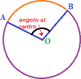

Angoli al centro e alla circonferenza
Definizione. Un angolo che ha il vertice nel centro della circonferenza e i lati (secanti) che tagliano la circonferenza in due punti A e B si dice angolo al centro. □
Definizione. Un angolo che ha il vertice V sulla circonferenza ed i cui lati (secanti) tagliano la circonferenza nei punti A e B si dice angolo alla circonferenza. □